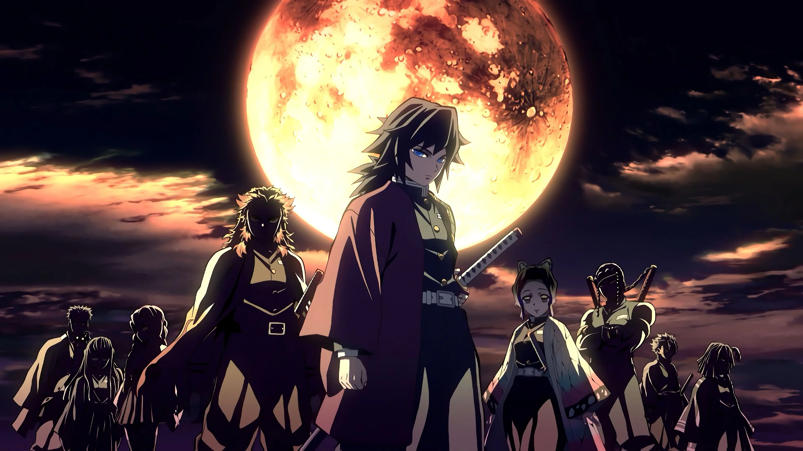
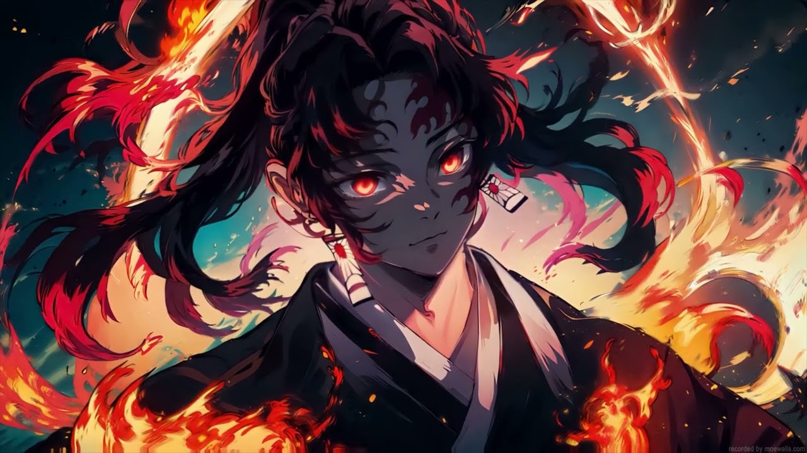
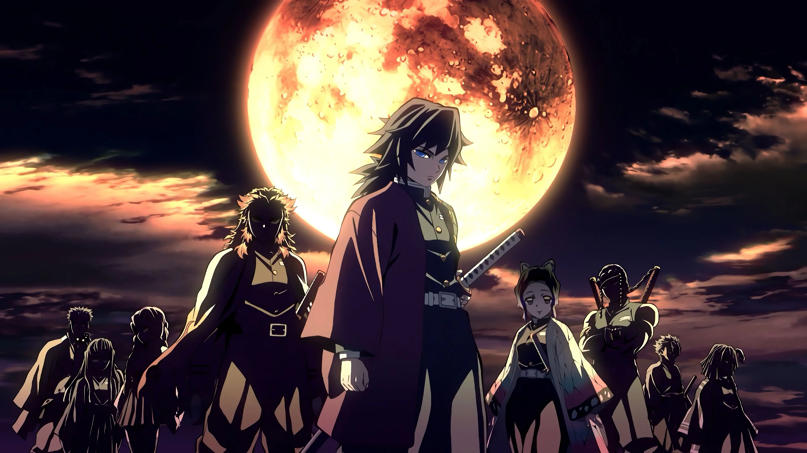
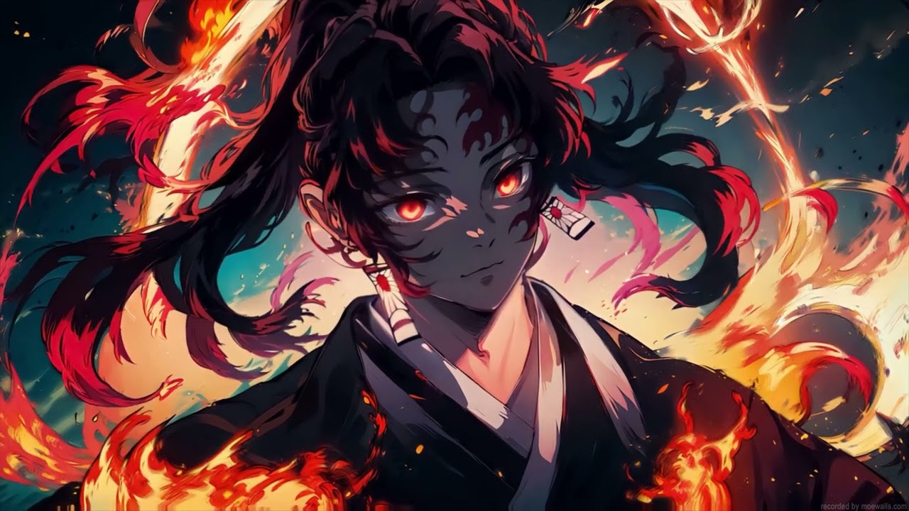
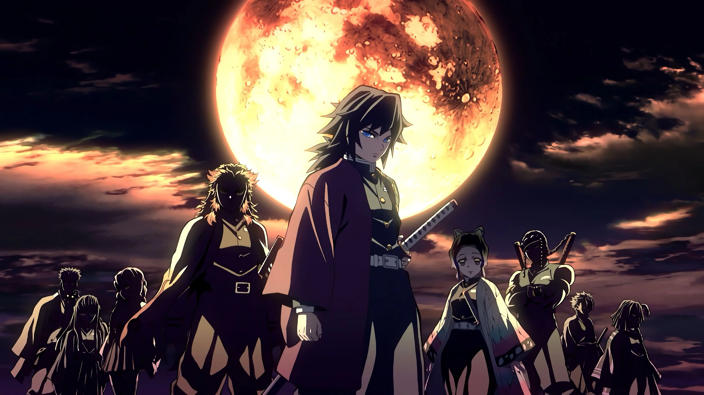
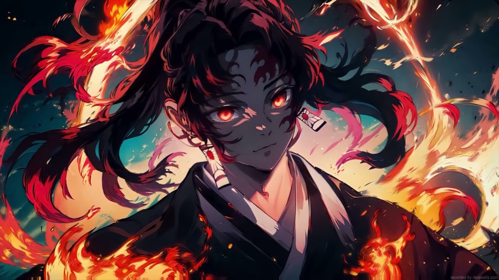

Gallery
 



Experience the world of swords, demons, and destiny.


A heart full of kindness and determination.
A demon who still protects humanity.
Fearful yet deadly when asleep.
Wild, fierce, and unpredictable.

The first demon and supreme ruler of all demons. Cold, intelligent, and obsessed with immortality.
The strongest Upper Moon, master of Moon Breathing and unmatched swordsmanship.
A smiling demon with a twisted heart, using deadly ice-based Blood Demon Arts.
A warrior demon who respects strength and despises weakness, master of destructive martial arts.
A cowardly demon whose fear manifests into multiple powerful emotional clones.

A grotesque demon obsessed with art, using deadly porcelain-based attacks.
A deadly sibling duo sharing one life, wielding sickles and deadly sashes.


Pick a trait: